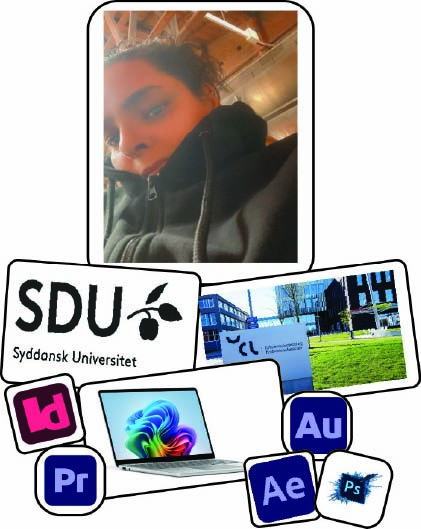

ND Multimediedesign
OM MIG SELV
OM MIG SELV
Mit navn er Nivine Daoud og jeg er en kreativ og positiv person som elsker at arbejde med design og digitale løsninger. Jeg kan godt lide at lære nye ting og udvikle mine evner især når det handler om hjemmesider kreativitet og design. Jeg arbejder hårdt for det, jeg gerne vil opnå, og jeg prøver altid at gøre mit bedste i de projekter, jeg arbejder med. Jeg er en person der godt kan lide at udfordre mig selv og prøve nye ting. Jeg synes det er spændende at arbejde med kreative ideer og gøre dem til virkelighed. For mig er det vigtigt at udvikle mig både personligt og fagligt så jeg hele tiden bliver bedre til det jeg laver. Jeg elsker at arbejde med kreative projekter, fordi jeg kan bruge min fantasi og mine ideer. Jeg synes det er sjovt at skabe noget nyt og se et projekt udvikle sig fra start til slut. Jeg er også en person der er hjælpsom, ansvarlig og god til at samarbejde med andre mennesker.
Mit uddannelse og interesser
Jeg interesserer mig meget for design hjemmesider og kreative projekter. Jeg synes det er spændende at arbejde med farver billeder og layouts for at skabe noget flot og moderne. Jeg interesserer mig også for digitale medier og kreative værktøjer, fordi jeg elsker at udvikle mine evner og lære nye teknikker. Jeg bruger gerne tid på at udforske forskellige designs og finde inspiration til mine egne projekter. Jeg synes det er spændende at se hvordan kreativitet og teknologi kan arbejde sammen og skab gode løsninger.
Mine kompetercer
Jeg har erfaring med HTML og CSS, hvor jeg arbejder med at lave hjemmesider til både computer og mobil. Jeg har også erfaring med forskellige Adobe-programmer som Photoshop, InDesign, Premiere Pro og After Effects. Jeg er god til at arbejde selvstændigt, men jeg fungerer også godt sammen med andre mennesker i projekter. Jeg arbejder struktureret og prøver altid at gøre mit arbejde så godt som muligt. Jeg er lærenem og motiveret for hele tiden at lære nye ting og udvikle mine kompetencer.
Mine fritid
I min fritid bruger jeg meget tid på kreative projekter og digitale programmer som jeg har udvikle mine evner endnu mere. Jeg kan godt lide at arbejde med design, finde nye idéer og udforske forskellige kreative løsninger. Jeg kan også godt lide at være sammen med familie og venner, fordi det giver mig glæde og energi i hverdagen. Jeg synes det er vigtigt både at have tid til kreativitet og tid til de mennesker der betyder noget for mig.
Mine mål
Mit mål har altid været at studere på SDU og det mål har jeg opnået. Jeg har arbejdet hårdt for at udvikle mig både fagligt og personligt så jeg kunne komme tættere på mine drømme inden for design og digitale løsninger. Nu er mit mål at arbejde både selvstændigt og sammen med virksomheder, hvor jeg kan bruge mine kreative evner og udvikle endnu flere erfaringer. Jeg ønsker at arbejde med hjemmesider, design og kreative projekter hvor jeg kan skabe flotte og brugervenlige løsninger.

ND Multimediedesign
Kontakt mig
E-mail: Nivo_dk20@hotmail.com
Tlf: +45 60137552
Følg mig
Instagram: